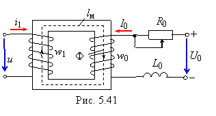

5.5.1. Управляемый дроссель
В п. 5.4 показано, что индуктивность катушки можно изменять, регулируя длину воздушного зазора в магнитопроводе. Большое применение в разных областях техники получили устройства (управляемые дроссели, магнитные усилители, стабилизаторы напряжения и др.), у которых используется другой способ изменения
индуктивности (индуктивного сопротивления) катушки со сталью, заключающийся в подмагничивании её сердечника дополнительной катушкой, питаемой постоянным током.
|  |
Простейшая управляемая нелинейная индуктивная катушка (управляемый дроссель) изображена на рис. 5.41. Она состоит из двух обмоток w1 и w0, размещённых на ферромагнитном сердечнике. Площадь поперечного сечения сердечника Sм, длина средней магнитной линии lм.
Обмотка w1 включена в цепь переменного тока, и по ней протекает переменный ток i, содержащий первую и высшие гармоники. Обмотка управления (подмагничивания) w0 подключена к источнику постоянного напряжения U0 последовательно с потенциометром R0. По обмотке w0 протекает постоянный ток I0 ≈ U0 / R0. Для ограничения в обмотке w0 переменного тока, вызванного индуктированной переменным магнитным потоком ЭДС, в неё включена дополнительная катушка с индуктивностью L0.